KR260 BIST Board Setup¶
Hardware Requirements¶
KR260 Robotics Starter Kit
KR260 Power Supply & Adapter
MicroSD Card
Host Machine (Widows or Ubuntu)
Four USB Flash Drives
Five Ethernet Cables
Ethernet Switch
30 Female to Female Jumper Wires
1080P/4K Monitor and Power Supply
DisplayPort Cable
Board Setup¶
This page shows how to set up the KR260 before running the BIST application.
Refer to the KR260 Board and the Interface layout below for connector reference numbers:
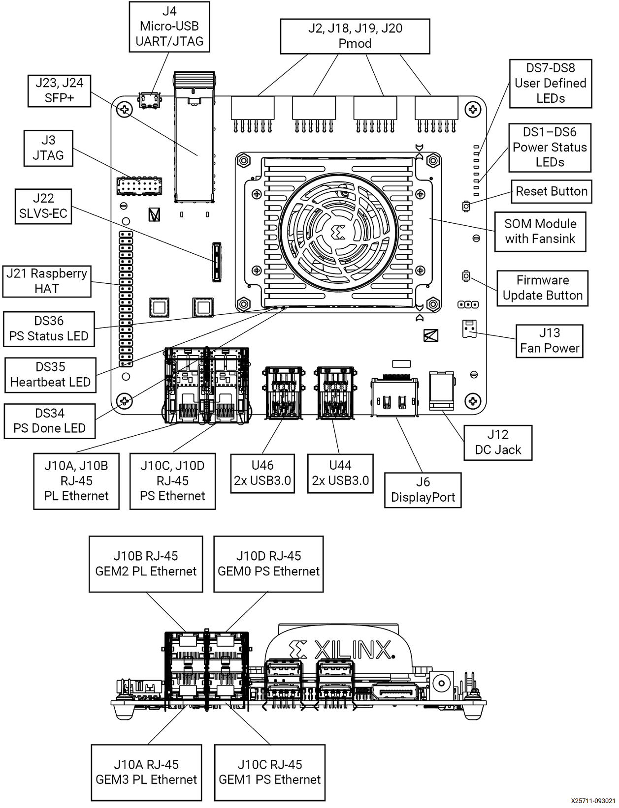
Test case mapping to board interfaces:
| Interface | External Hardware | Test Module | Test Case |
|---|---|---|---|
| USB3.0 (Top port) - U46 | USB Flash Drive | Disk | usb1_read_performance |
| USB3.0 (Top port) - U46 | USB Flash Drive | Disk | usb1_write_performance |
| USB3.0 (Bottom port) - U46 | USB Flash Drive | Disk | usb2_read_performance |
| USB3.0 (Bottom port) - U46 | USB Flash Drive | Disk | usb2_write_performance |
| USB3.0 (Top port) - U44 | USB Flash Drive | Disk | usb3_read_performance |
| USB3.0 (Top port) - U44 | USB Flash Drive | Disk | usb3_write_performance |
| USB3.0 (Bottom port) - U44 | USB Flash Drive | Disk | usb4_read_performance |
| USB3.0 (Bottom port) - U44 | USB Flash Drive | Disk | usb4_write_performance |
| MicroSD port - J11 | MicroSD Card | Disk | sd_read_performance |
| MicroSD port - J11 | MicroSD Card | Disk | sd_write_performance |
| Display Port - J6 | 1080p/4k Monitor and Power Cable, Display Port Cable | Display | display_connectivity |
| Display Port - J6 | 1080p/4k Monitor and Power Cable, Display Port Cable | Display | display_modetest |
| SOM EEPROM | None | EEPROM | som_eeprom |
| Carrier Card EEPROM | None | EEPROM | carrier_card_eeprom |
| GEM2 PL RJ45 Ethernet - J10B | Ethernet Cable | Ethernet | ethernet1_ping |
| GEM2 PL RJ45 Ethernet - J10B | Ethernet Cable | Ethernet | ethernet1_perf |
| GEM3 PL RJ45 Ethernet - J10A | Ethernet Cable | Ethernet | ethernet2_ping |
| GEM3 PL RJ45 Ethernet - J10A | Ethernet Cable | Ethernet | ethernet2_perf |
| GEM0 PS RJ45 Ethernet - J10D | Ethernet Cable | Ethernet | ethernet3_ping |
| GEM0 PS RJ45 Ethernet - J10D | Ethernet Cable | Ethernet | ethernet3_perf |
| GEM1 PS RJ45 Ethernet - J10C | Ethernet Cable | Ethernet | ethernet4_ping |
| GEM1 PS RJ45 Ethernet - J10C | Ethernet Cable | Ethernet | ethernet4_perf |
| SFP+ - J23, J24 | Fiber Optic Cable, 2x 10G SFP+ Transceivers, 10G NIC Card | Ethernet | ethernet_sfp_ping |
| SFP+ - J23, J24 | Fiber Optic Cable, 2x 10G SFP+ Transceivers, 10G NIC Card | Ethernet | ethernet_sfp_perf |
| PMOD - J2 | PMOD TPH2 Test Header, 4x Female-Female Jumper Wires | GPIO | pmod0 |
| PMOD - J18 | PMOD TPH2 Test Header, 4x Female-Female Jumper Wires | GPIO | pmod1 |
| PMOD - J19 | PMOD TPH2 Test Header, 4x Female-Female Jumper Wires | GPIO | pmod2 |
| PMOD - J20 | PMOD TPH2 Test Header, 4x Female-Female Jumper Wires | GPIO | pmod3 |
| Raspberry Pi - J21 | 14x Female-Female Jumper Wires | GPIO | rpi |
| PS I2C Main Bus | None | I2C | ps_i2c_bus_main |
| PS I2C Channel 0 Bus | None | I2C | ps_i2c_bus_ch0 |
| PS I2C Channel 1 Bus | None | I2C | ps_i2c_bus_ch1 |
| INA260 | None | IIO | ina260_current |
| QSPI MTD Device | None | MTD | qspi_read_write |
| QSPI MTD Device | None | MTD | qspi_read_performance |
| QSPI MTD Device | None | MTD | qspi_write_performance |
| PWM Fan - J13 | Board Fan | PWM | fan |
| TPM Hardware | None | TPM | tpm2_getcap |
| TPM Hardware | None | TPM | tpm2_selftest |
| TPM Hardware | None | TPM | tpm2_getrandom |
| TPM Hardware | None | TPM | tpm2_hash |
| TPM Hardware | None | TPM | tpm2_pcrread |
| TPM Hardware | None | TPM | tpm2_pcrextend |
| TPM Hardware | None | TPM | tpm2_pcrreset |
| SLVS-EC Connector - J22 | IMX547 SLVS-EC Sensor Module | Video | imx547_filesink |
| SLVS-EC Connector - J22 | IMX547 SLVS-EC Sensor Module | Video | imx547_perf |
The BIST application requires the following hardware setup to run the full suite of hardware tests:
USB Flash Drive (x4)
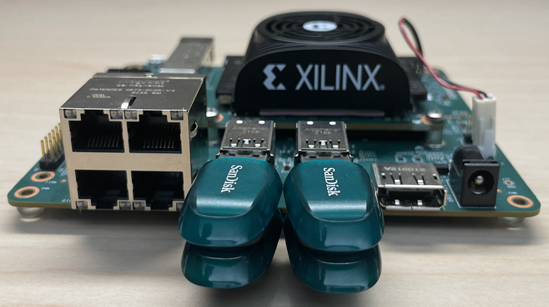
Connect a USB Flash Drive to each of the 4 USB ports.
Ethernet Cable (x4)
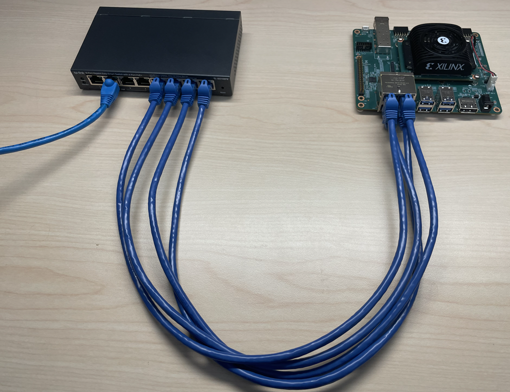
Connect an Ethernet cable from each of the 4 Ethernet ports on the KR260 to the host machine via a switch.
PMOD (x4)
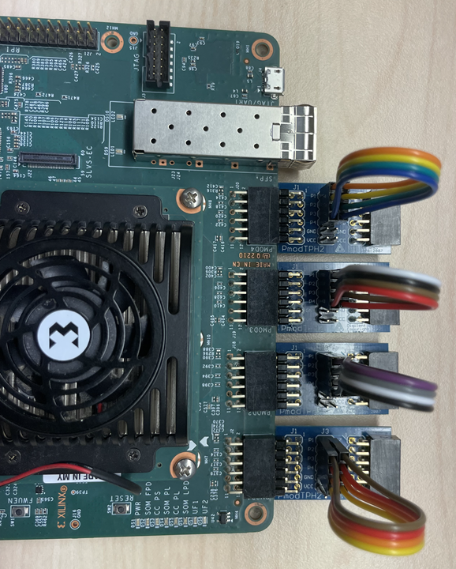
Connect the PMOD test point headers to the PMOD ports (J2, J18, J19, J20) on the KR260. Connect the pins on J3 on each of the four PMOD test point headers using jumper wires as described below.
Connect P1 to P7
Connect P2 to P8
Connect P3 to P9
Connect P4 to P10
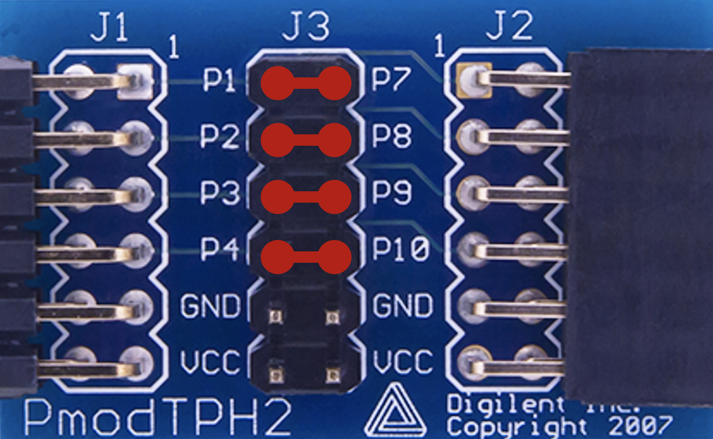
Monitor
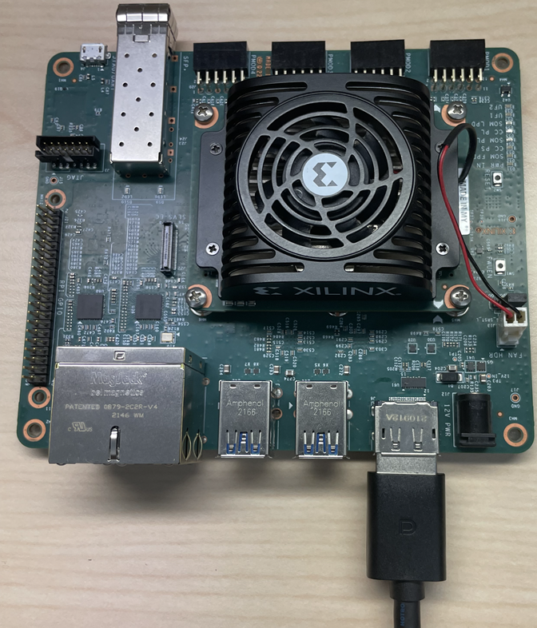
Before booting, connect a 1080P/4K monitor to the board via the Display Port.
IMX547 SLVS-EC Sensor Module
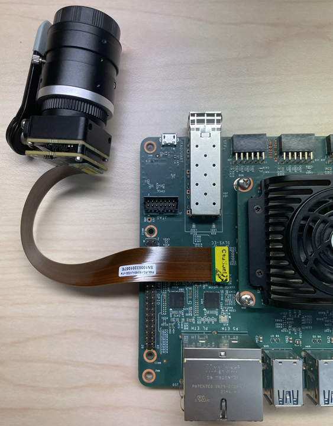
Connect the IMX547 Sensor Module to J22 on the KR260.
SFP+ Module
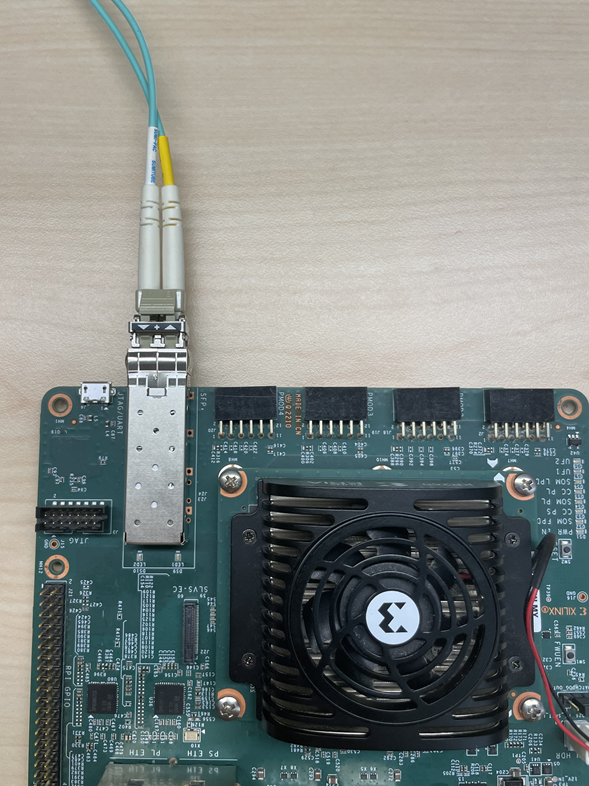
Connect an SFP+ Transceiver to both ends of the fiber optic cable. Install the NIC card in the host machine. Connect one end of the fiber optic cable to the KR260 SFP+ connector. Connect the other end to the NIC card in the host machine.
Raspberry Pi GPIO Header
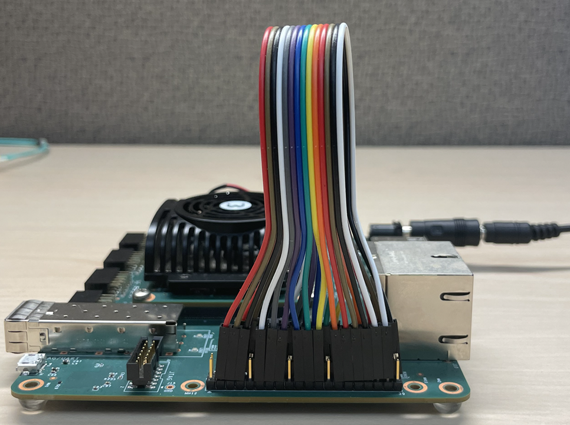
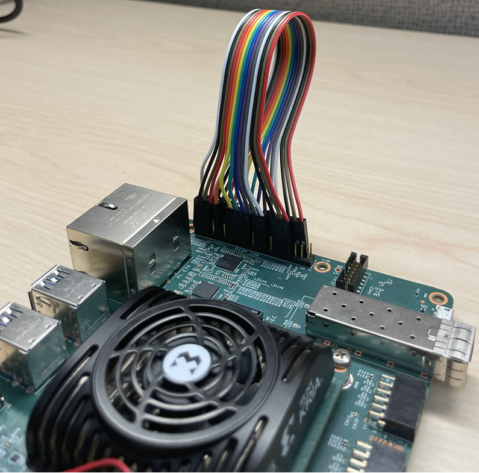
Connect the Raspberry Pi GPIO pins on J21 using jumper wires as described below.
Connect P3 to P8
Connect P5 to P10
Connect P7 to P12
Connect P11 to P16
Connect P13 to P18
Connect P15 to P22
Connect P19 to P24
Connect P21 to P26
Connect P23 to P28
Connect P27 to P32
Connect P29 to P36
Connect P31 to P38
Connect P33 to P40
Connect P35 to P37
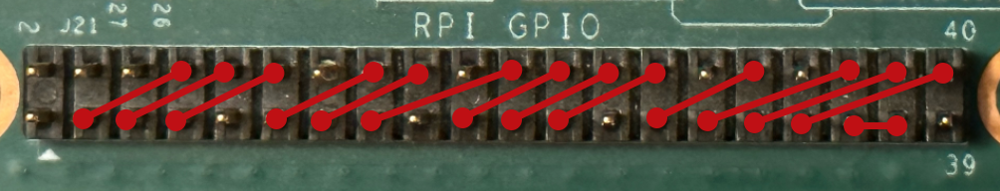
The following image shows a KR260 setup with all the hardware connected.
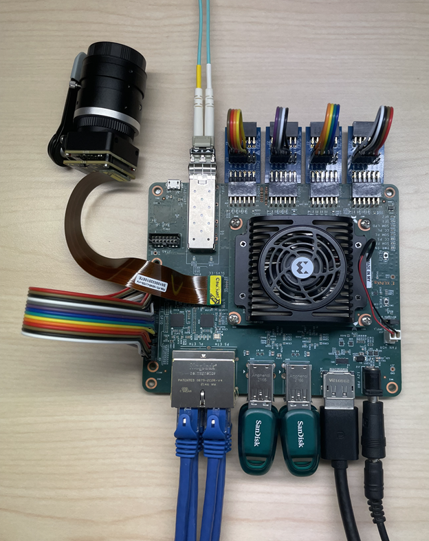
Next Steps¶
Copyright © 2023 Advanced Micro Devices, Inc